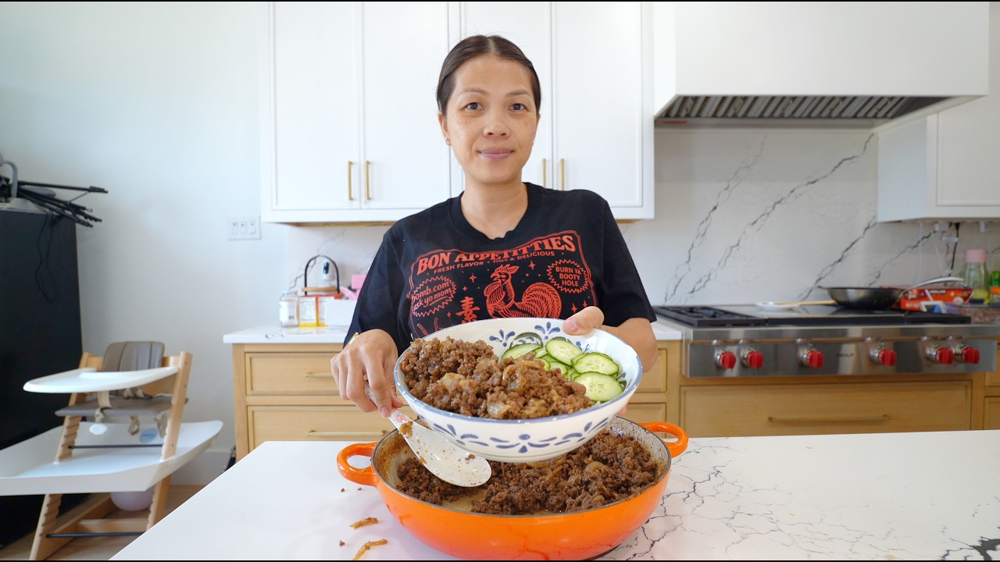

Source: Alissa Nguyen – YouTube
1 lb ground beef
1 onion, sliced
1 Tbsp minced garlic
Oil, for cooking
Sesame oil, for finishing
Sesame seeds, for garnish
Chopped scallion, for garnish
Kimchi or radish kimchi, for serving
Cooked rice, for serving
2 Tbsp brown sugar
2 Tbsp mirin
4 Tbsp soy sauce (low sodium preferred)
1 Tbsp Korean plum syrup (sub: 1 Tbsp water + 1 tsp apple cider vinegar)
Peel and slice the onion; set aside.
Combine the brown sugar, mirin, soy sauce, and plum syrup (or substitute). Mix well and set aside.
Heat a little oil in a pan. Add the sliced onions and cook for 1 minute. Add the minced garlic and cook for another minute, until fragrant.
Add the ground beef and break it into small pieces. Once the beef is about 30% cooked, pour in the sauce. Let it simmer until the sauce reduces and evaporates, stirring occasionally. (This takes a little time, but it's worth it.)
Drizzle with sesame oil and give it a final mix.
Assemble bowls with rice, scallions, sesame seeds, and kimchi or the veggie of your choice.
Korean plum syrup substitute: 1 Tbsp water + 1 tsp apple cider vinegar.
Low-sodium soy sauce is preferred for the sauce.